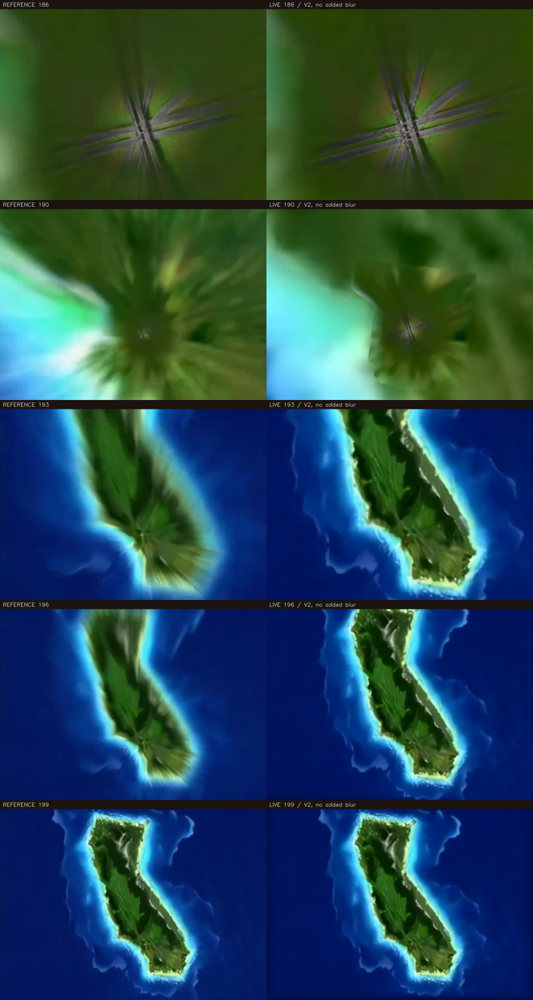
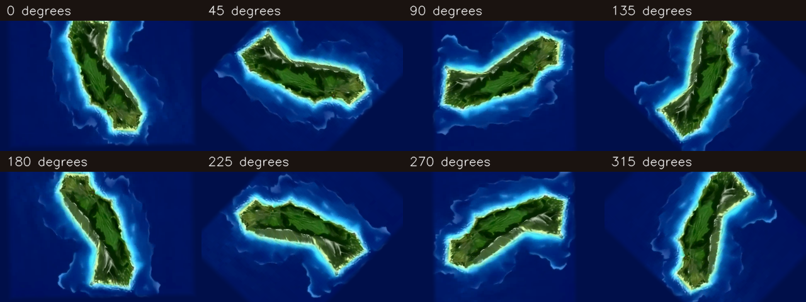
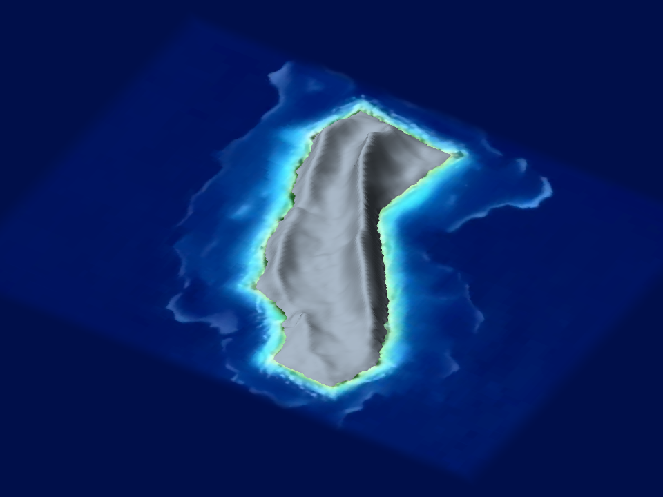

Island intro — V2 visual review
Editable 3D terrain, reference color atlas, static ocean, and measured camera continuation. Review 1 is pending your approval.
Open interactive Godot study · Camera preview video
Full reveal: source and live
Move the slider to compare the same frame. The live island has actual terrain relief; color and lighting are projected from the supplied footage.
Left: source only. Right: live only.
Camera continuation
The preview starts at the planned overlap time, 3.3033 s, then settles and rotates. V4 supplies the video blend and live radial blur. V2 adds no runtime blur; the source-derived atlas retains some source softness and streaking.

Source on left; live study on right. Early close-up coastline and texture seams remain visible without V4 blur and require inspection during that milestone.
Rotation and mesh

The source does not establish hidden slopes uniquely. Relief heights and unseen surfaces are editable estimates.

Clay inspection of the actual island mesh. All water is a separate flat plane.
Review scope
Please assess silhouette, mountain placement, coast, color, and composition. The ocean currently uses a frozen reference color plate; its waves and world-anchored deep-water pattern are V3. Production loading is unchanged. This preview does not establish seamless-transition approval or physical-phone performance.